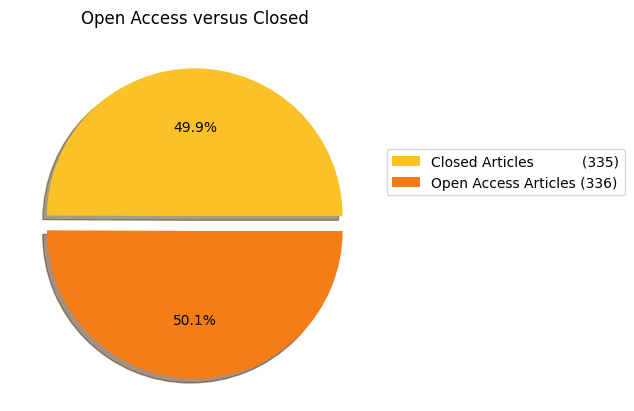
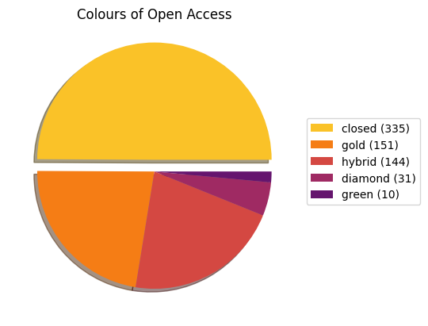
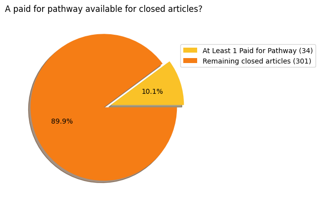
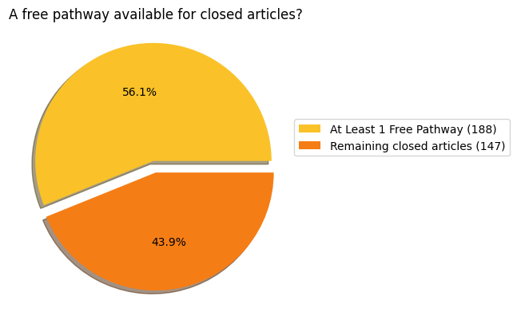
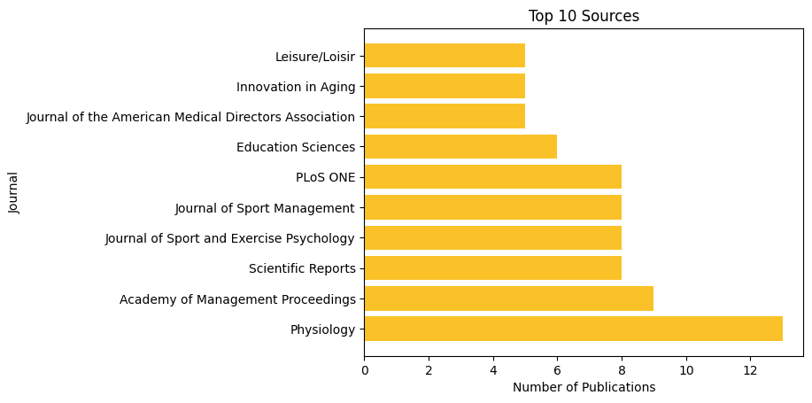
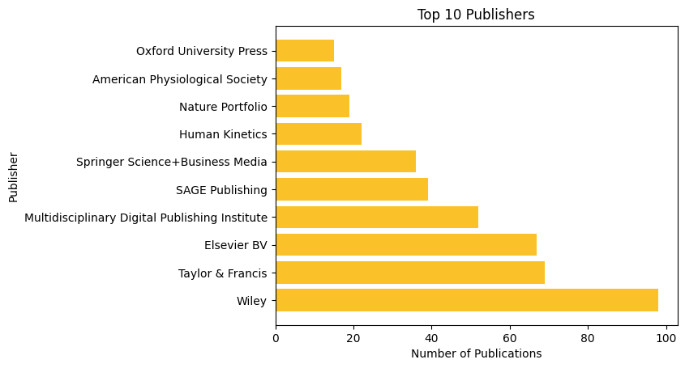

A yearly check-in of some Scholarly Publishing topics at Brock University. It presents some snapshots and analysis of publishing trends at Brock University.
This inaugural report is being released during Open Access Week 2025. Future reports will be released in January summarizing the previous year.
Over the course of January 1, 2025 to October 1, 2025 a total of: 402 articles have been published by Brock Researchers.
The Brock Library website explains the dynamics of Open Access is detail.
The most important detail here is that Open Access articles are available to readers without any payment!
Sometimes a journal charges an author processing charge (APC) to make an article open access. This happens for both closed journals with some Open Access content and for totally open access journals.
Sometimes it is possible to publish an earlier version of a closed journal article in a place like the Brock University Digital Repository to have it become Open Access. We call this having a Green Open Access Pathway.
Does this sound confusing? Well it is.
The following graph show the proportion of closed and open access articles published by Brock researchers.

We can now examine the the different colours of Open Access journals published. The pie graph below shows the breakdown of these categories versus the closed articles published.

As described above we can sometimes achieve Green Open Access by posting a version of an article or by paying a fee. The following graph shows how many closed papers have at least one paid for pathway to achieve some version of open access.

In contrast, the following graph shows how many closed papers have at least one free pathway to achieve some version of open access. This means that there is a free way to make 128 closed articles Open Access!

The library is developing a program to contact the Brock affliated authors of these 128 articles to encourage them to submit an eligible version into the Brock Digital Repository. All researchers will need to is copy and paste the DOI of their paper and upload a PDF copy to a form.
If you published recently and fall in this category, expect an email soon with more details about this.
Some publishers enable Open Access through the payment of an additional Author Processing Charge (APC). This is on top of regular subscription costs. All figures in CAD
The Brock Library now has a collection of Transformative Agreements with some publishers that will offer some discounts to APC charges.
Some journal titles are popular with Brock Authors.


This data is built with a few assumptions involved and outlined below
The notebooks and dataset used:
If you have an idea for what to add to this report please get in touch.
The data in this analysis was sourced from
Special Thanks to Erin Moorhead, Research Lifecycle Intern